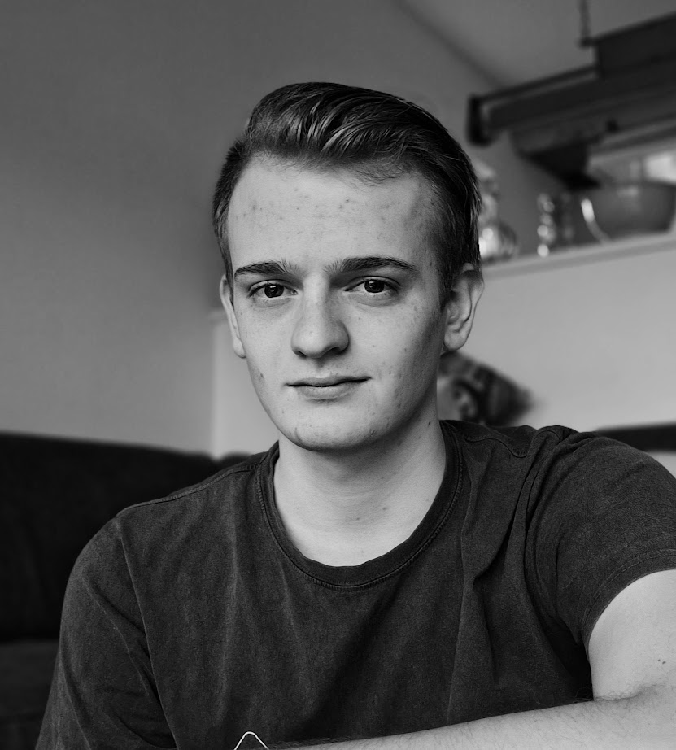
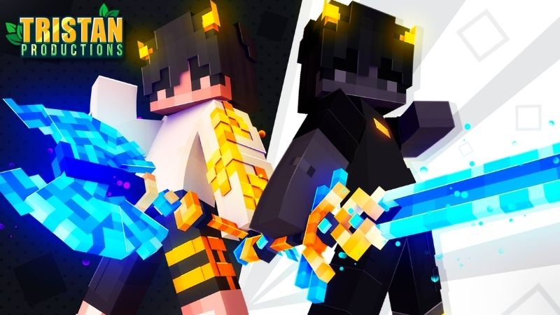
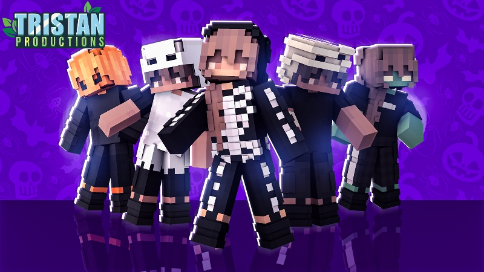
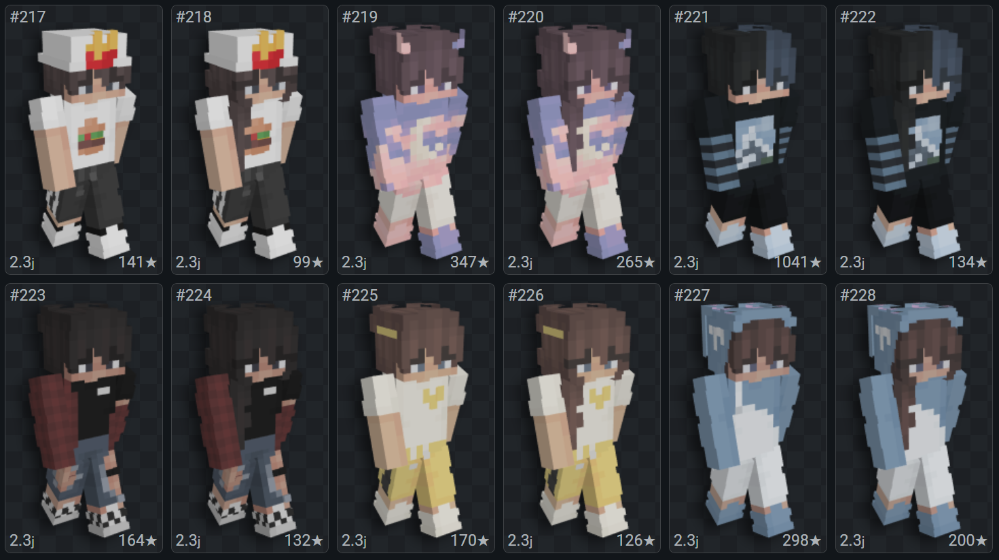
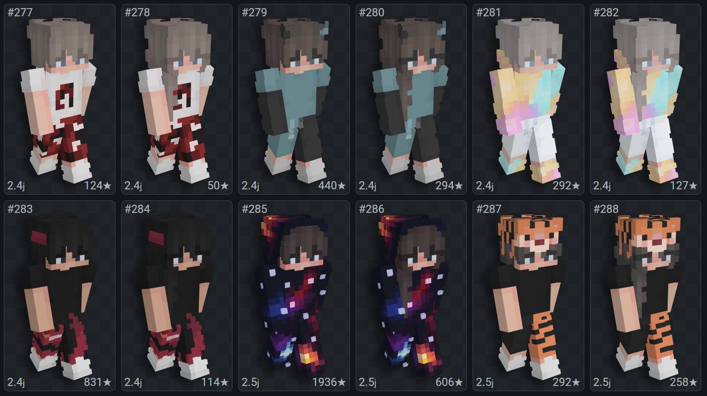
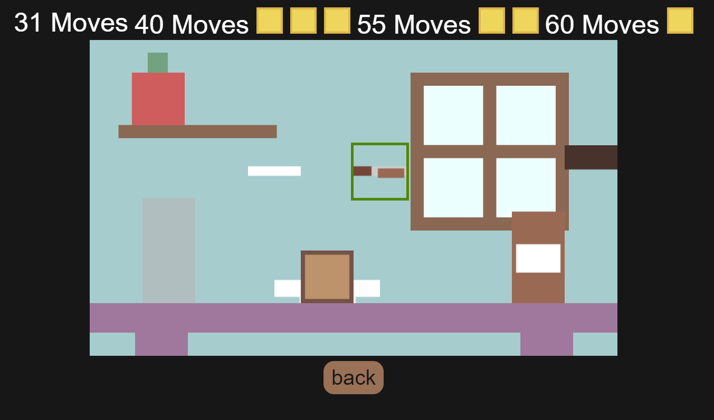
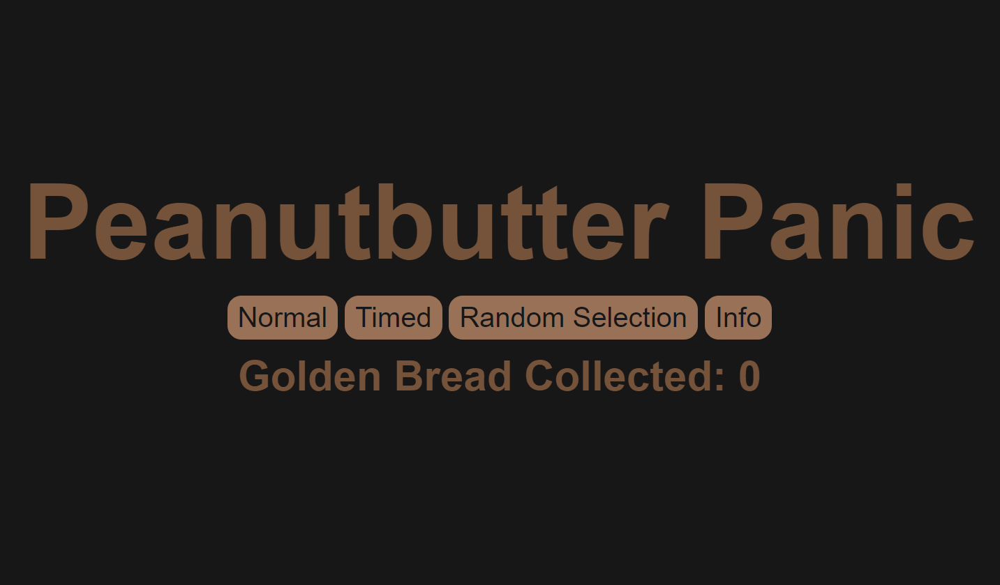
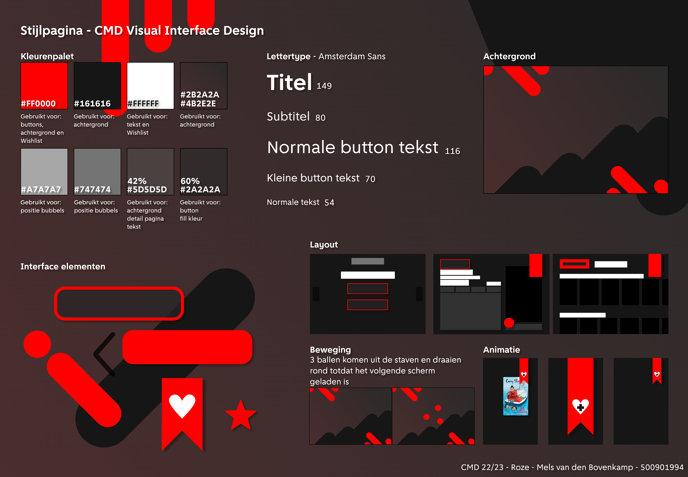

Minecraft Skin Designer & UI/UX Designer
Hallo! Ik ben Mels van den Bovenkamp, ik ben al 3 jaar een gepassioneerde Minecraft skin designer. Sinds 2 jaar ben ik daar ook een freelancer in. Daarnaast ben ik een CMD Bachelor Student op de opleiding Communication and Multimedia Design. Met mijn UI/UX design skills maak ik websites waarbij de gebruiker en klant centraal staat.

Afgelopen 2 jaar werk ik samen met de Minecraft Partner Tristan Productions. Ik maak skinpacks (10 skins), deze worden op de marktplaats gezet en verkocht. In de tijd dat ik met hem heb samengewerkt heb ik meer dan 2000 skins voor hem gemaakt.
Tools: PMCSkin3D


Mijn eerste jaar in de skin wereld bevond ik mij vooral op NameMC. Ik heb hier voor een jaar lang dagelijks 2 skins gemaakt. Uiteindelijk ben ik tijdenlijk het meest populaire account op de website geweest met meer dan 40.000 unieke account weergaven in 1 maand.
Tools: PMCSkin3D


Tijdens de eerste les van het vak Inleiding Programmeren ging de docent uitleggen hoe de computer jouw code leest. Dit deed hij door ons een stappenplan te laten schrijven voor het maken van een broodje pindakaas. De docent nam elke stap letterlijk, hierdoor kwam er geen normaal broodje pindakaas uit. Dit inspireerde mij om Peanutbutter panic te maken.
Tools: Adobe XD & Visual Studio Code
Peanutbutter-panic

Voor het vak Visual Interface Design moesten wij een interface maken om boeken te zoeken. De interface zou dan geplaatst worden in een mediatheek op de middelbareschool. Wij moesten er dan met ons ontwerp voor zorgen dat de scholieren meer boeken gingen lezen.
Tools: Adobe XD

Ik ben te bereiken op: